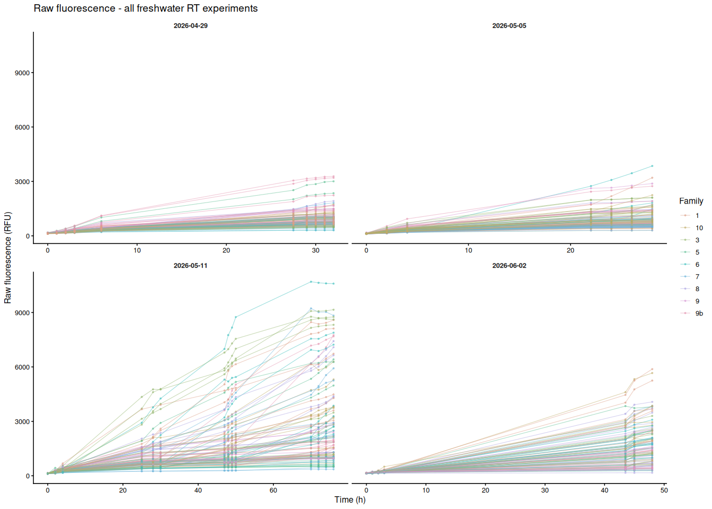
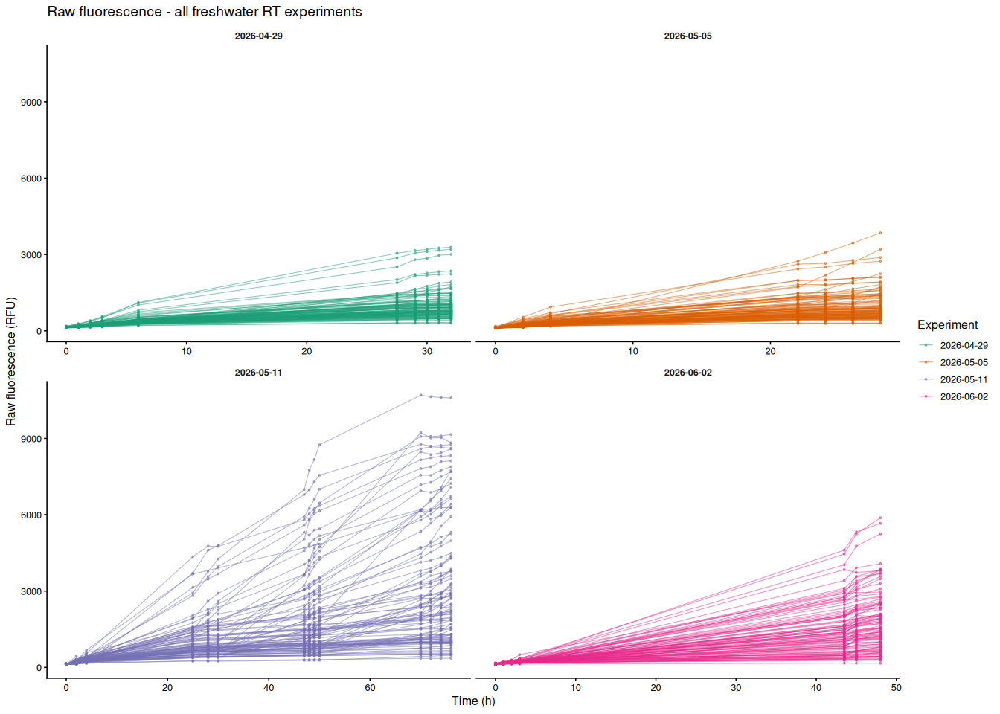
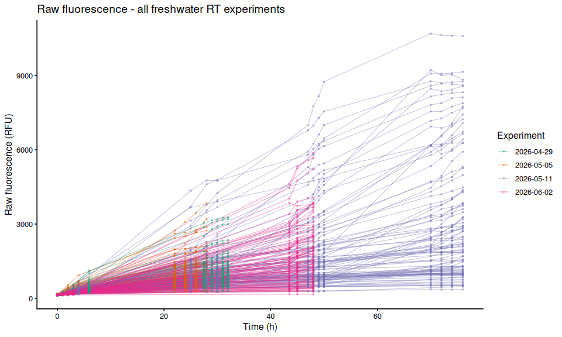

INTRO
Steven asked me to plot just the the raw fluorescence of resazurin data from the Pacific oyster USDA freshwater stress experiments we’d run up until now. The data is raw fluorescence, which means it has not been processed or normalized in any way.
This notebook will be updated as we continue to run more experiments and collect more data, so it will be a living document that evolves over time.
Analysis was/is performed in R and Knitted to markdown below:
Plots were generated from the following data file (exported from plot_df object in the Rmd):
Steven asked that I add a brief summary of the statistical analyses performed on the AUC data for each experiment, so here is a table summarizing the ANOVA results and significant pairwise comparisons for each experiment:
| Date | Duration | AUC ANOVA | Highest families (mean AUC) | Lowest families (mean AUC) | Significant pairwise (AUC) |
|---|---|---|---|---|---|
| 2026-04-29 | 32 h | F(8,90)=3.28, p=0.003 | 9b (0.96), 9 (0.87), 5 (0.83) | 7 (0.41), 6 (0.44) | 7 vs 9b (p=0.010), 6 vs 9b (p=0.018) |
| 2026-05-05 | 28 h | F(8,90)=1.43, p=0.194 | 6 (0.84), 1 (0.73) | 7 (0.42), 8 (0.59) | none |
| 2026-05-11 | 76 h | F(8,76)=1.46, p=0.186 | 8 (7.09), 1 (6.71), 3 (6.07) | 9 (3.39), 9b (3.52) | none |
| 2026-06-02 | 48 h | F(8,90)=3.74, p<0.001 | 1 (2.30), 8 (2.17), 3 (2.00) | 9b (0.73), 9 (0.83) | 1 vs 9 (p=0.024), 1 vs 9b (p=0.012), 8 vs 9b (p=0.029) |
A notable pattern is the apparent reversal between the April 29 and June 2 assays: families 9 and 9b had the highest metabolism in April but consistently the lowest in the three subsequent experiments.
1 Background
Combines raw fluorescence data from all freshwater room-temperature (RT) resazurin assay experiments and produces a single per-individual fluorescence trace plot across all runs. Individuals that share the same sample_ID.group value in different experiments are not the same animal; a globally-unique ID is constructed from the experiment date and the within-experiment sample ID.
Blank wells and samples flagged exclude_from_analysis = TRUE in any layout file are excluded from the plot.
| Experiment | Data directory | Time range |
|---|---|---|
| 2026-04-29 | 20260429-freshwater_stress | T0 - T32 h |
| 2026-05-05 | 20260505-mgig-freshwater-RT | T0 - T28 h |
| 2026-05-11 | 20260511-mgig-freshwater-RT | T0 - T76 h |
| 2026-06-02 | 20260602-mgig-freshwater-RT | T0 - T48 h |
2 Setup
2.1 Knitr options
knitr::opts_chunk$set(
echo = TRUE, # Display code chunks
eval = TRUE, # Evaluate code chunks
warning = FALSE, # Hide warnings
message = FALSE, # Hide messages
comment = "", # Prevents appending '##' to beginning of lines in code output
results = 'hold' # Holds output so it's all printed together after code chunk
)2.2 Load libraries
library(tidyverse)
library(colorspace)
library(rprojroot)3 Helper Functions
normalize_well_id <- function(x) {
x <- toupper(trimws(x))
valid <- str_detect(x, "^[A-Z]+[0-9]+$")
out <- rep(NA_character_, length(x))
if (!any(valid)) return(out)
m <- str_match(x[valid], "^([A-Z]+)([0-9]+)$")
out[valid] <- paste0(m[, 2], as.integer(m[, 3]))
out
}
parse_time_hr <- function(path) {
hit <- str_match(basename(path), "(?i)-T([0-9]+(?:\\.[0-9]+)?)\\.txt$")
as.numeric(hit[, 2])
}
parse_plate_id <- function(path) {
hit <- str_match(basename(path),
"(?i)^plate-([A-Za-z0-9-]+)-T[0-9]+(?:\\.[0-9]+)?\\.txt$")
id <- hit[, 2]
ifelse(is.na(id), "unknown", id)
}
extract_results_block <- function(lines) {
results_idx <- which(trimws(lines) == "Results")
if (length(results_idx) == 0) stop("No Results section found")
idx <- results_idx[1]
header_tokens <- str_split(lines[idx + 1], "\\t")[[1]] |> trimws()
col_ids <- header_tokens[
header_tokens != "" & str_detect(header_tokens, "^[0-9]+$")]
j <- idx + 2
data_lines <- character()
while (j <= length(lines)) {
line <- lines[j]
if (trimws(line) == "") break
if (!str_detect(line, "^[A-Za-z]\\t")) break
data_lines <- c(data_lines, line)
j <- j + 1
}
list(col_ids = col_ids, data_lines = data_lines)
}
parse_plate_export <- function(path) {
lines <- readLines(path, warn = FALSE)
res <- extract_results_block(lines)
map_dfr(res$data_lines, function(line) {
tokens <- str_split(line, "\\t")[[1]] |> trimws()
tokens <- tokens[tokens != ""]
row_letter <- tokens[1]
nums <- suppressWarnings(as.numeric(tokens[-1]))
valid_idx <- which(!is.na(nums))
if (length(valid_idx) == 0) return(tibble())
vals <- nums[valid_idx]
n <- min(length(vals), length(res$col_ids))
tibble(
row_id = toupper(row_letter),
col_id = as.integer(res$col_ids[seq_len(n)]),
well_id = normalize_well_id(
paste0(toupper(row_letter), res$col_ids[seq_len(n)])),
value = vals[seq_len(n)]
)
}) %>%
mutate(
plate_id = str_to_lower(parse_plate_id(path)),
time_hr = parse_time_hr(path)
)
}
standardize_names <- function(nms) {
nms |>
str_to_lower() |>
str_replace_all("[^a-z0-9]+", "_") |>
str_replace_all("_+", "_") |>
str_replace("_$", "")
}
okabe_ito_7 <- c(
"#E69F00", "#56B4E9", "#009E73", "#F0E442",
"#0072B2", "#D55E00", "#CC79A7"
)
make_palette <- function(n) {
if (n == 0L) return(character(0))
if (n <= length(okabe_ito_7)) return(okabe_ito_7[seq_len(n)])
qualitative_hcl(n, palette = "Dynamic")
}4 Experiment Registry
proj_root <- find_rstudio_root_file()
experiments <- tibble(
exp_id = c("20260429", "20260505", "20260511", "20260602"),
data_dir = c(
"20260429-freshwater_stress",
"20260505-mgig-freshwater-RT",
"20260511-mgig-freshwater-RT",
"20260602-mgig-freshwater-RT"
)
)
str(experiments)tibble [4 × 2] (S3: tbl_df/tbl/data.frame)
$ exp_id : chr [1:4] "20260429" "20260505" "20260511" "20260602"
$ data_dir: chr [1:4] "20260429-freshwater_stress" "20260505-mgig-freshwater-RT" "20260511-mgig-freshwater-RT" "20260602-mgig-freshwater-RT"5 Load Data
5.1 Plate fluorescence files
plates_raw <- map_dfr(seq_len(nrow(experiments)), function(i) {
dir <- file.path(proj_root, "Resazurin", "data", experiments$data_dir[i])
files <- list.files(
dir,
pattern = "(?i)^plate-.*-T[0-9]+(?:\\.[0-9]+)?\\.txt$",
full.names = TRUE
)
map_dfr(files, ~ tryCatch(parse_plate_export(.x),
error = function(e) tibble())) %>%
mutate(exp_id = experiments$exp_id[i])
})
str(plates_raw)tibble [4,092 × 7] (S3: tbl_df/tbl/data.frame)
$ row_id : chr [1:4092] "A" "A" "A" "A" ...
$ col_id : int [1:4092] 1 2 3 4 1 2 3 4 1 2 ...
$ well_id : chr [1:4092] "A1" "A2" "A3" "A4" ...
$ value : num [1:4092] 141 140 126 143 145 159 168 157 145 139 ...
$ plate_id: chr [1:4092] "a" "a" "a" "a" ...
$ time_hr : num [1:4092] 0 0 0 0 0 0 0 0 0 0 ...
$ exp_id : chr [1:4092] "20260429" "20260429" "20260429" "20260429" ...5.2 Layout files
layouts_raw <- map_dfr(seq_len(nrow(experiments)), function(i) {
path <- file.path(proj_root, "Resazurin", "data",
experiments$data_dir[i], "layout.csv")
raw <- read_csv(path, col_types = cols(.default = "c"),
show_col_types = FALSE)
names(raw) <- standardize_names(names(raw))
raw %>%
mutate(
plate_id = str_remove(str_to_lower(plate_id), "^plate-"),
well_id = normalize_well_id(plate_well),
is_blank = toupper(trimws(is_blank)) %in%
c("TRUE", "T", "1", "YES", "Y"),
exclude_from_analysis =
if ("exclude_from_analysis" %in% names(raw))
toupper(trimws(exclude_from_analysis)) %in%
c("TRUE", "T", "1", "YES", "Y")
else
FALSE,
family_id_group = str_to_lower(trimws(family_id_group)),
exp_id = experiments$exp_id[i]
) %>%
select(exp_id, plate_id, well_id,
is_blank, exclude_from_analysis,
family_id_group, sample_id_group)
})
str(layouts_raw)tibble [432 × 7] (S3: tbl_df/tbl/data.frame)
$ exp_id : chr [1:432] "20260429" "20260429" "20260429" "20260429" ...
$ plate_id : chr [1:432] "a" "a" "a" "a" ...
$ well_id : chr [1:432] "A1" "A2" "A3" "A4" ...
$ is_blank : logi [1:432] FALSE FALSE FALSE FALSE FALSE FALSE ...
$ exclude_from_analysis: logi [1:432] FALSE FALSE FALSE FALSE FALSE FALSE ...
$ family_id_group : chr [1:432] "6" "6" "6" "6" ...
$ sample_id_group : chr [1:432] "1" "2" "3" "4" ...5.3 Merge plate data with layout
all_dat <- plates_raw %>%
left_join(layouts_raw,
by = c("exp_id", "plate_id", "well_id")) %>%
mutate(
is_blank = replace_na(is_blank, FALSE),
exclude_from_analysis = replace_na(exclude_from_analysis, FALSE)
)
str(all_dat)tibble [4,092 × 11] (S3: tbl_df/tbl/data.frame)
$ row_id : chr [1:4092] "A" "A" "A" "A" ...
$ col_id : int [1:4092] 1 2 3 4 1 2 3 4 1 2 ...
$ well_id : chr [1:4092] "A1" "A2" "A3" "A4" ...
$ value : num [1:4092] 141 140 126 143 145 159 168 157 145 139 ...
$ plate_id : chr [1:4092] "a" "a" "a" "a" ...
$ time_hr : num [1:4092] 0 0 0 0 0 0 0 0 0 0 ...
$ exp_id : chr [1:4092] "20260429" "20260429" "20260429" "20260429" ...
$ is_blank : logi [1:4092] FALSE FALSE FALSE FALSE FALSE FALSE ...
$ exclude_from_analysis: logi [1:4092] FALSE FALSE FALSE FALSE FALSE FALSE ...
$ family_id_group : chr [1:4092] "6" "6" "6" "6" ...
$ sample_id_group : chr [1:4092] "1" "2" "3" "4" ...6 Filter Samples
Remove blank wells, excluded samples, and any wells without layout metadata. Create a globally-unique individual identifier so same-numbered samples from different experiments are treated as distinct animals.
plot_df <- all_dat %>%
filter(
!is_blank,
!exclude_from_analysis,
!is.na(family_id_group),
!is.na(sample_id_group),
is.finite(time_hr),
is.finite(value)
) %>%
mutate(
unique_id = paste(exp_id, sample_id_group, sep = "_"),
family = factor(family_id_group,
levels = sort(unique(family_id_group))),
experiment = factor(exp_id)
)
str(plot_df)tibble [3,752 × 14] (S3: tbl_df/tbl/data.frame)
$ row_id : chr [1:3752] "A" "A" "A" "A" ...
$ col_id : int [1:3752] 1 2 3 4 1 2 3 4 1 2 ...
$ well_id : chr [1:3752] "A1" "A2" "A3" "A4" ...
$ value : num [1:3752] 141 140 126 143 145 159 168 157 145 139 ...
$ plate_id : chr [1:3752] "a" "a" "a" "a" ...
$ time_hr : num [1:3752] 0 0 0 0 0 0 0 0 0 0 ...
$ exp_id : chr [1:3752] "20260429" "20260429" "20260429" "20260429" ...
$ is_blank : logi [1:3752] FALSE FALSE FALSE FALSE FALSE FALSE ...
$ exclude_from_analysis: logi [1:3752] FALSE FALSE FALSE FALSE FALSE FALSE ...
$ family_id_group : chr [1:3752] "6" "6" "6" "6" ...
$ sample_id_group : chr [1:3752] "1" "2" "3" "4" ...
$ unique_id : chr [1:3752] "20260429_1" "20260429_2" "20260429_3" "20260429_4" ...
$ family : Factor w/ 9 levels "1","10","3","5",..: 5 5 5 5 5 5 5 5 5 5 ...
$ experiment : Factor w/ 4 levels "20260429","20260505",..: 1 1 1 1 1 1 1 1 1 1 ...6.1 Write plot_df to CSV
out_dir <- file.path(proj_root, "Resazurin", "outputs",
"02.00-resazurin-raw-all-freshwater-RT-experiments")
dir.create(out_dir, recursive = TRUE, showWarnings = FALSE)
write_csv(plot_df, file.path(out_dir, "plot_df.csv"))
message("plot_df written to: ", out_dir)7 Color Palettes
fam_palette <- setNames(
make_palette(nlevels(plot_df$family)),
levels(plot_df$family)
)
str(fam_palette) Named chr [1:9] "#DB9D85" "#BFAA67" "#93B66E" "#5CBD92" "#38BDBB" ...
- attr(*, "names")= chr [1:9] "1" "10" "3" "5" ...exp_palette <- setNames(
c("#1B9E77", "#D95F02", "#7570B3", "#E7298A"),
levels(plot_df$experiment)
)
str(exp_palette) Named chr [1:4] "#1B9E77" "#D95F02" "#7570B3" "#E7298A"
- attr(*, "names")= chr [1:4] "20260429" "20260505" "20260511" "20260602"8 Raw Fluorescence Plots
8.1 Colored by family
Each line is one individual oyster; color indicates USDA family. Panels separate experiments (x-axes are free since time ranges differ).
p_by_family <- ggplot(
plot_df,
aes(x = time_hr,
y = value,
group = unique_id,
colour = family)
) +
geom_line(alpha = 0.5, linewidth = 0.4) +
geom_point(size = 0.7, alpha = 0.5) +
facet_wrap(
~ exp_id,
scales = "free_x",
labeller = labeller(exp_id = c(
"20260429" = "2026-04-29",
"20260505" = "2026-05-05",
"20260511" = "2026-05-11",
"20260602" = "2026-06-02"
))
) +
scale_colour_manual(values = fam_palette, name = "Family") +
labs(
title = "Raw fluorescence - all freshwater RT experiments",
x = "Time (h)",
y = "Raw fluorescence (RFU)"
) +
theme_classic(base_size = 12) +
theme(
strip.background = element_blank(),
strip.text = element_text(face = "bold"),
legend.position = "right"
)
p_by_family
8.2 Colored by experiment
Each line is one individual oyster; color indicates experiment date. Panels separate experiments (x-axes are free since time ranges differ).
p_by_experiment <- ggplot(
plot_df,
aes(x = time_hr,
y = value,
group = unique_id,
colour = experiment)
) +
geom_line(alpha = 0.5, linewidth = 0.4) +
geom_point(size = 0.7, alpha = 0.5) +
facet_wrap(
~ exp_id,
scales = "free_x",
labeller = labeller(exp_id = c(
"20260429" = "2026-04-29",
"20260505" = "2026-05-05",
"20260511" = "2026-05-11",
"20260602" = "2026-06-02"
))
) +
scale_colour_manual(
values = exp_palette,
name = "Experiment",
labels = c(
"20260429" = "2026-04-29",
"20260505" = "2026-05-05",
"20260511" = "2026-05-11",
"20260602" = "2026-06-02"
)
) +
labs(
title = "Raw fluorescence - all freshwater RT experiments",
x = "Time (h)",
y = "Raw fluorescence (RFU)"
) +
theme_classic(base_size = 12) +
theme(
strip.background = element_blank(),
strip.text = element_text(face = "bold"),
legend.position = "right"
)
p_by_experiment
8.3 All individuals colored by experiment (single panel)
Each line is one individual oyster; color indicates experiment date.
p_all_by_experiment <- ggplot(
plot_df,
aes(x = time_hr,
y = value,
group = unique_id,
colour = experiment)
) +
geom_line(alpha = 0.4, linewidth = 0.4) +
geom_point(size = 0.6, alpha = 0.4) +
scale_colour_manual(
values = exp_palette,
name = "Experiment",
labels = c(
"20260429" = "2026-04-29",
"20260505" = "2026-05-05",
"20260511" = "2026-05-11",
"20260602" = "2026-06-02"
)
) +
labs(
title = "Raw fluorescence - all freshwater RT experiments",
x = "Time (h)",
y = "Raw fluorescence (RFU)"
) +
theme_classic(base_size = 12) +
theme(legend.position = "right")
p_all_by_experiment
8.4 Save figures
out_dir <- file.path(proj_root, "Resazurin", "outputs",
"02.00-resazurin-raw-all-freshwater-RT-experiments",
"figures")
dir.create(out_dir, recursive = TRUE, showWarnings = FALSE)
ggsave(file.path(out_dir, "raw_fluor_all_freshwater_RT_by_family.png"),
p_by_family, width = 14, height = 10)
ggsave(file.path(out_dir, "raw_fluor_all_freshwater_RT_by_experiment.png"),
p_by_experiment, width = 14, height = 10)
ggsave(
file.path(out_dir, "raw_fluor_all_freshwater_RT_single_by_experiment.png"),
p_all_by_experiment, width = 10, height = 6
)
message("Figures saved to: ", out_dir)